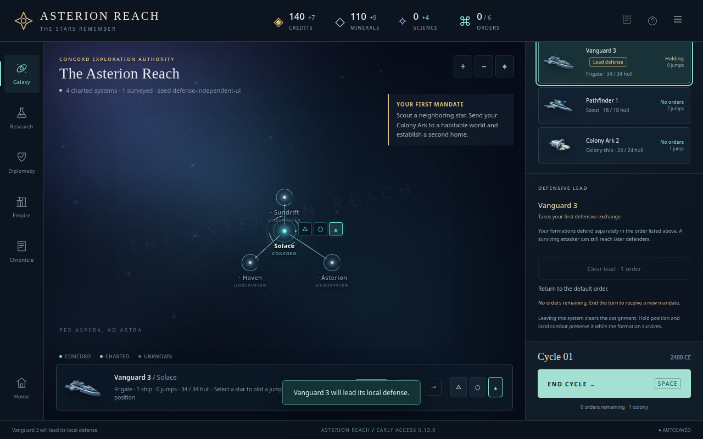
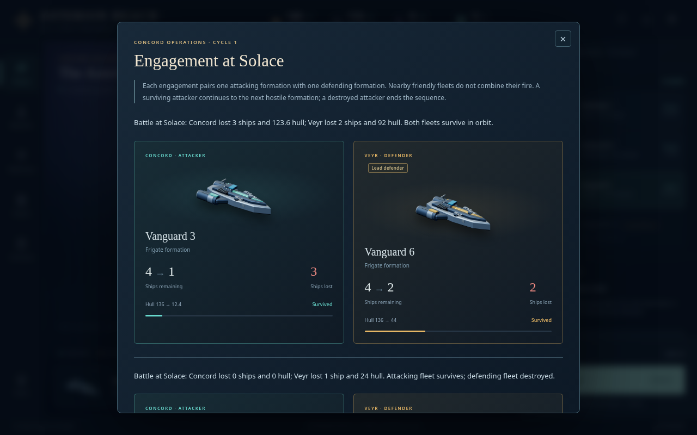

Design evidence · Controlled rival-AI comparison · Field Guide
A deliberate first defender
Lead defense lets a player choose which military formation takes its government’s first exchange in a system. Each change costs one order. The assignment grants no damage bonus or combined fire, and a surviving attacker can still reach later defenders. Default battles remain unchanged without an assignment.
Control and visibility
The control sits beside the orbital fleet list. Its cost and unavailable reason remain visible after spending the last order; keyboard focus returns to the selected owned fleet row. Hold is independent. Split retains the original lead, merge transfers it to the survivor, and physical departure clears it. Observed foreign leads have badges but no actionable controls. A hidden fleet’s name, strength or assignment cannot change the unobserved target interface.

Independent synthetic boundary check: the paid assignment exactly matches the ordinary command and survives reload.Historical reports begin at the beginning
A report badge comes from the saved defender snapshot, so deleting the current fleet does not erase it. Two-exchange reports now open at scroll position zero with the heading visible and the close button focused. Keyboard traversal stays inside the dialog, and Escape leaves the game state unchanged.

The initial-focus correction prevents the bottom action from hiding the first engagement.Independent acceptance
Twelve AI regressions and eight distinct browser checks passed at desktop and narrow widths, without page errors or horizontal overflow. The first five checks preceded the report-focus correction; two additional checks cover its final behavior. A separate final boundary check verifies that an ordinary attack with 0.01 hull preserves the living formation against zero enemy fire, shows <0.1 instead of zero, and survives exact save/reload. The exact changed source line and both phases’ fingerprints are preserved without relabeling the earlier run.
The AI method audit confirms one optional paid assignment after existing work, using only own formations and lawful local observations. It deliberately retains an established lead rather than spending orders repeatedly on damage or repair changes. This is a bounded heuristic, not an optimal tactical forecast.
The controlled comparison has 32 outcome configurations and 32 full raw validation replays. It measured 158 paid assignments but only five actual duels involving a marked defender. Player policies did not assign leads. The corrected-engine rerun exactly matches all 32 superseded per-run records and final hashes; these are replacement results, not extra samples. All 16 paired finish turns matched and one winner changed; this sparse exposure does not establish broad balance neutrality or human win rates.
Initial five interface checks · Final two report checks · Final source hashes and phase attribution · Initial comparison audit · Corrected-engine comparison audit · Final boundary and source hashes · Tiny-hull report check · Frozen production assets
Narrow control layout · Narrow report layout · Historical marker after live fleet deletion
These interface checks use explicitly synthetic fixtures. Historical player evidence and order-only counterfactuals are described separately in the design report. Original scripts retain their local review paths as provenance; committed browser and rules suites are the supported regression entry points.